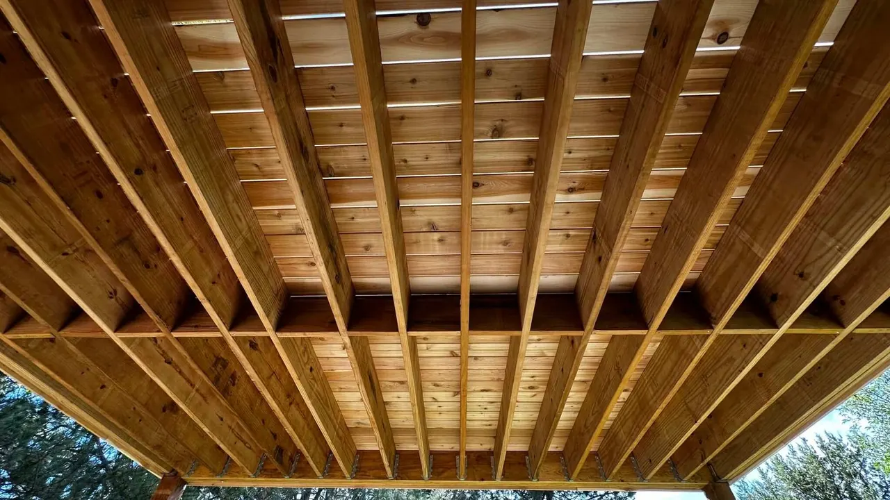

Deck Repair Fort Collins
Owner-operated service with direct communication from initial review through completed work.
Alpine Deck & Fence provides deck repair services for homeowners in Fort Collins and surrounding Northern Colorado communities. The scope is reviewed to determine whether targeted repairs or a larger rebuild makes the most sense.

Owner-operated service with direct communication from initial review through completed work.
Targeted repairs can correct damaged or unsafe areas without replacing an entire deck when the remaining structure is sound.
Visible damage is only part of the job. Framing, connections, and support conditions are considered before repair work begins.
When repair is not the right long-term answer, the project can be scoped as a partial or complete rebuild.
Send the location, photos, and a short description of what feels loose, damaged, or unsafe.